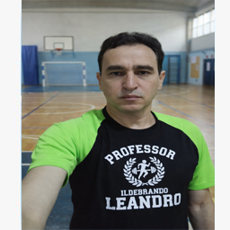
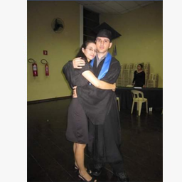
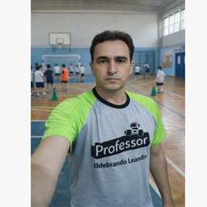

Você já se perguntou sobre a importância da educação física? Aqui vou explicar!
Educação Física Escolar: Formação Completa, Metodologias, Treinos e Desenvolvimento Integral

A Educação Física escolar é uma das áreas mais importantes dentro do desenvolvimento humano, pois atua diretamente na formação física, cognitiva, emocional e social dos alunos. Mais do que apenas atividades esportivas, trata-se de uma disciplina essencial para a construção de hábitos saudáveis e para o desenvolvimento da disciplina, do respeito e da cooperação.
O papel do professor licenciado em Educação Física vai muito além da prática esportiva. Ele é um educador, um orientador e um agente de transformação dentro do ambiente escolar, sendo responsável por desenvolver habilidades motoras, estimular o raciocínio e promover o bem-estar dos alunos.
O Papel do Professor de Educação Física na Escola
O professor de Educação Física licenciado possui formação pedagógica que o habilita a atuar diretamente na educação básica, desde a educação infantil até o ensino médio. Sua função não é apenas aplicar exercícios, mas sim planejar e executar atividades com objetivos educacionais bem definidos.
Esse profissional trabalha com metodologias que envolvem o corpo e o movimento como ferramentas de aprendizagem, contribuindo para o desenvolvimento global do aluno.
Funções técnicas e pedagógicas do professor
✔ Planejamento de aulas estruturadas
✔ Desenvolvimento da coordenação motora
✔ Aplicação de atividades recreativas e esportivas
✔ Promoção da saúde e qualidade de vida
✔ Avaliação do desenvolvimento físico dos alunos
✔ Estímulo à socialização e trabalho em equipe
✔ Adaptação de atividades para diferentes níveis
Metodologias de Ensino na Educação Física Escolar
O ensino da Educação Física deve ser baseado em metodologias ativas, onde o aluno participa do processo de aprendizagem de forma dinâmica e interativa. O professor deve utilizar estratégias que estimulem o interesse e a participação dos alunos.
Entre as metodologias mais utilizadas estão:
✔ Ensino por jogos e brincadeiras
✔ Aprendizagem baseada em desafios
✔ Atividades cooperativas
✔ Circuitos motores
✔ Treinos funcionais adaptados
Essas metodologias permitem que o aluno aprenda de forma natural, desenvolvendo habilidades físicas e sociais ao mesmo tempo.
Importância das Brincadeiras no Desenvolvimento Infantil
As brincadeiras são fundamentais no processo de ensino da Educação Física, especialmente na infância. Elas contribuem para o desenvolvimento da coordenação motora, equilíbrio, agilidade e interação social.
Além disso, as atividades lúdicas tornam o aprendizado mais prazeroso, facilitando a assimilação de regras e conceitos.
Exemplos de atividades práticas

✔ Pega-pega com variações estratégicas
✔ Circuitos com obstáculos
✔ Jogos com bola (coordenação e equipe)
✔ Brincadeiras de equilíbrio
✔ Atividades com música e ritmo
✔ Jogos de reação e velocidade
Planejamento de Treinos e Aulas
O planejamento é um dos pilares da atuação do professor de Educação Física. Uma aula bem estruturada garante melhores resultados e maior segurança para os alunos.
A estrutura básica de uma aula deve conter:
✔ Aquecimento (preparação do corpo)
✔ Parte principal (atividade central)
✔ Volta à calma (relaxamento)
O professor deve adaptar as atividades conforme a idade, nível e necessidade dos alunos, garantindo inclusão e eficiência.
Educação Física e Saúde
A prática regular de atividades físicas na escola contribui diretamente para a saúde dos alunos. Ela ajuda a prevenir doenças, melhora a capacidade cardiorrespiratória e promove o bem-estar.
Além disso, a Educação Física combate o sedentarismo e incentiva hábitos saudáveis desde cedo.
O Professor como Agente de Transformação
O professor de Educação Física exerce um papel fundamental na formação do caráter dos alunos. Ele ensina valores como disciplina, respeito, responsabilidade e trabalho em equipe.
Seu impacto vai além da escola, influenciando diretamente na vida dos alunos.
Qualificação e Formação Profissional
Para atuar na área, é necessário possuir licenciatura em Educação Física e registro no conselho profissional (CREF). A formação contínua também é essencial para acompanhar as mudanças do mercado.
O profissional deve estar sempre atualizado, buscando novos conhecimentos e aprimorando suas habilidades.
Diferencial Profissional e Visão Estratégica
Ildebrando Leandro, CREF 171646-G/SP, possui formação em Marketing, Bacharelado em Administração e Licenciatura em Educação Física, reunindo uma visão multidisciplinar que integra conhecimento técnico, pedagógico e estratégico.
Atualmente residindo em Portugal, atua com uma abordagem moderna e eficiente, combinando educação, gestão e estratégia para desenvolver soluções inovadoras na área da Educação Física.

Sua experiência permite não apenas ensinar, mas também estruturar projetos, organizar atividades e aplicar metodologias que geram resultados reais.
Educação Física como Ferramenta de Desenvolvimento
A Educação Física não é apenas uma disciplina escolar, mas sim uma ferramenta poderosa para o desenvolvimento humano. Ela contribui para a formação de indivíduos mais saudáveis, disciplinados e preparados para a vida.
Quando aplicada de forma estratégica, ela se torna um diferencial na educação e na formação de cidadãos.
Aplicação Profissional e Oportunidades
O profissional de Educação Física pode atuar em diversas áreas, como escolas, projetos sociais, academias, consultorias e treinamentos personalizados.
Além disso, pode desenvolver conteúdos educacionais, cursos e até mesmo ebooks, compartilhando conhecimento e gerando autoridade na área.
Conclusão
A Educação Física é uma área essencial para o desenvolvimento humano e social. Profissionais qualificados fazem a diferença, promovendo saúde, educação e qualidade de vida.
Ildebrando Leandro se destaca por sua formação completa, visão estratégica e compromisso com a educação, oferecendo um trabalho sério, profissional e alinhado com as necessidades atuais.
Se você busca conhecimento, desenvolvimento e orientação profissional na área de Educação Física, este conteúdo demonstra não apenas teoria, mas prática, experiência e capacidade real de atuação.
Agora se você procura um profissional qualificado em Educação Física, com experiência prática, visão estratégica e atuação moderna em Portugal e Brasil, estou à disposição para contribuir com o seu desenvolvimento. Conheça também o meu portfólio completo, onde apresento projetos, experiências e trabalhos desenvolvidos: Acessar meu site profissional